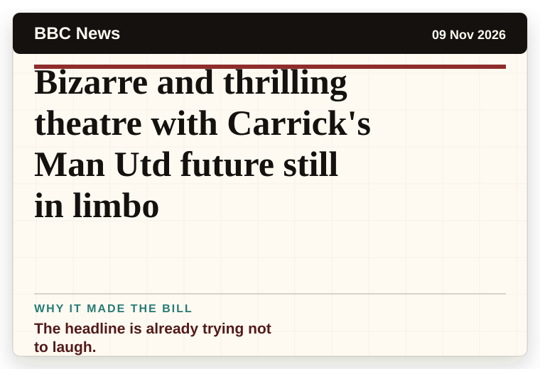
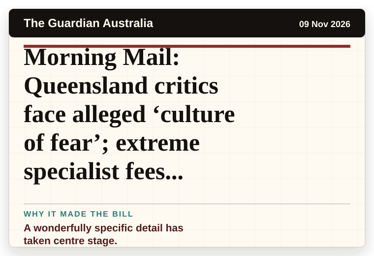
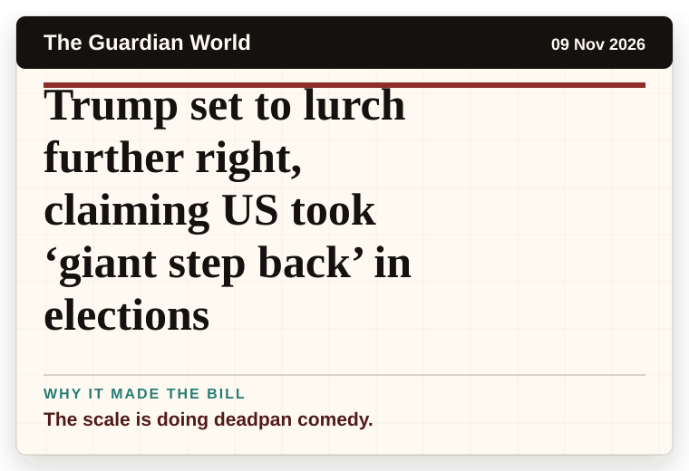
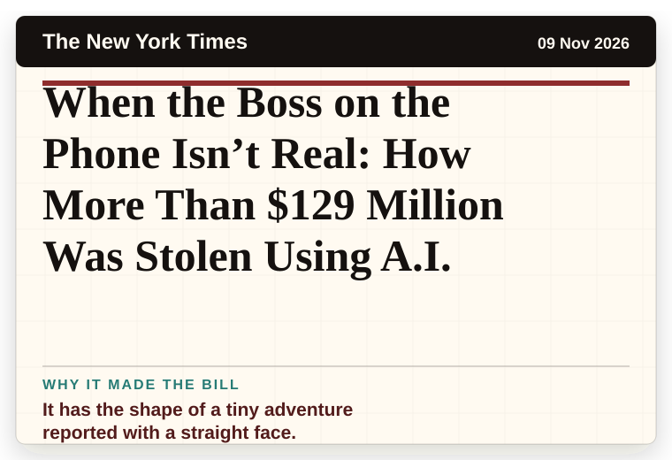
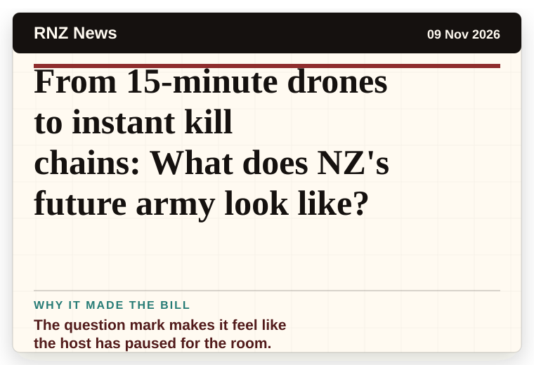

NT News
Australia
Darwin real estate: The latest auction and sales results for week ending November 7
It has the shape of a tiny adventure reported with a straight face.
The latest daily picks, linked back to the original sources. Search the room, pick a source, or follow a headline out to the full story.
Record updated: 09 Nov 2026, 11:07 AM AEST
Showing 18 headline candidates from the refresh run completed on 09 Nov 2026, 11:07 AM AEST.
It has the shape of a tiny adventure reported with a straight face.

A household object has somehow reached the news desk.

A household object has somehow reached the news desk.

A wonderfully specific detail has taken centre stage.

A very ordinary object has wandered into serious news.

It has the shape of a tiny adventure reported with a straight face.

The scale is doing deadpan comedy.

The object list sounds like someone shuffled three different stories together.

A wonderfully specific detail has taken centre stage.

A wonderfully specific detail has taken centre stage.

A mystery is doing a lot of work in a very small sentence.

The headline is already trying not to laugh.

The headline is already trying not to laugh.

A very ordinary object has wandered into serious news.

A wonderfully specific detail has taken centre stage.

The scale is doing deadpan comedy.

It has the shape of a tiny adventure reported with a straight face.

The question mark makes it feel like the host has paused for the room.